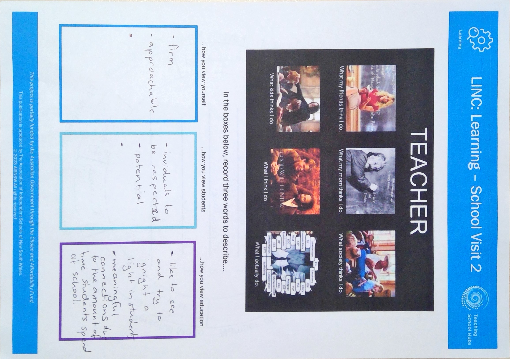
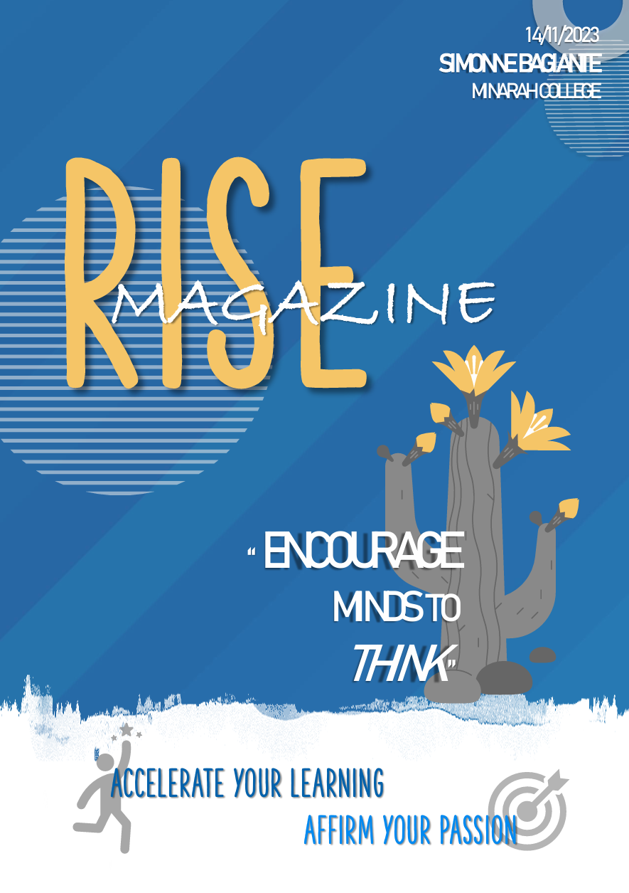

As a teacher trainee at Minarah College in Green Valley, I am actively involved with the AIS Teaching School Hubs. Through this program, I participate in professional development meetings organised by AIS that align directly with my teaching degree, allowing me to apply new strategies and insights directly in the classroom.
 